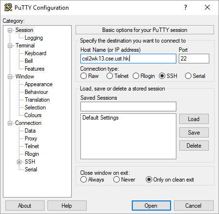

Checking for memory leak yourself
Some test cases will also check for errors like memory leak using the -fsanitize=address,leak,undefined options (related documentation here) of the latest g++ compiler on Linux (it won't work on Windows for the versions we have tested). If you wish to check for memory leak using the same options, you may do so remotely in our Linux Lab (Lab 2) by SSH. The following shows you how using the Virtual Barn. You may adjust the steps accordingly if you are familiar with using SSH on your own computer.
- Remote control a Windows machine in HKUST virtual barn. After following the installation guide and user guide there to install the remote control client and connect to the HKUST network, choose the Programming Software server when you are offered a selection of different servers.
- Copy your files to Virtual Barn. If you have no idea, you can email yourself the files and then download them there.
-
Open
PuTTY. There is a shortcut on your Desktop. Entercsl2wk13.cse.ust.hkas the Host Name. Note: If that one server doesn't work, you may try other servers such ascsl2wk14.cse.ust.hkandcsl2wk15.cse.ust.hk. The server number goes up to at least 40.
 -
Click Open. If a warning about the security key shows up, click Yes to dismiss it.

-
Enter your CSD login and password. (Register one if you haven't done so in lab 1 by following
the lab 1 instructions.) It may not show what you type when you are typing in the password. Don't worry, just type your password and hit the Enter key. You should login to your home directory. Enter the command
pwd(Print Working Directory) to verify this. It should show/homes/your_login
-
Open
FileZillafrom Start Menu. Click "File" -> "Site Manager" -> "New Site". Choose SFTP for protocol according to the screenshot below. Entercsl2wk13.cse.ust.hk(or whatever server you used in a previous step) as Host. Choose "Ask for password" for the Logon Type.
- Click Connect and then enter your CSD login and password.
-
If the connection succeeds, the right side should show your home directory at Linux Lab. Copy all the pa3 files including the cpp, and h files, by dragging them to the right side. (make sure you only have one main function defined in the uploaded file, so if you have multiple mainX.cpp, choose one only) Do NOT drag a folder containing all those files, instead, you should drag the files themselves only. That would upload the individual files (without any folder) to
/homes/your_login. You can closeFileZillaafter doing so. -
Go back to
PuTTY, and compile your program using the following command:g++8 -std=c++11 -fsanitize=address,leak,undefined -g -o pa3 *.cpp -
If no compilation errors occurs, you should be able to run your program by:
./pa3 - Note: As the memory leak checking is enabled along with other runtime error checking for your program, if there are any errors, some error messages (just like what you would see in the Error tab on Zinc) will appear in the terminal as your run your program.